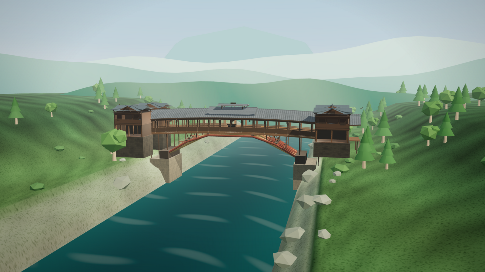
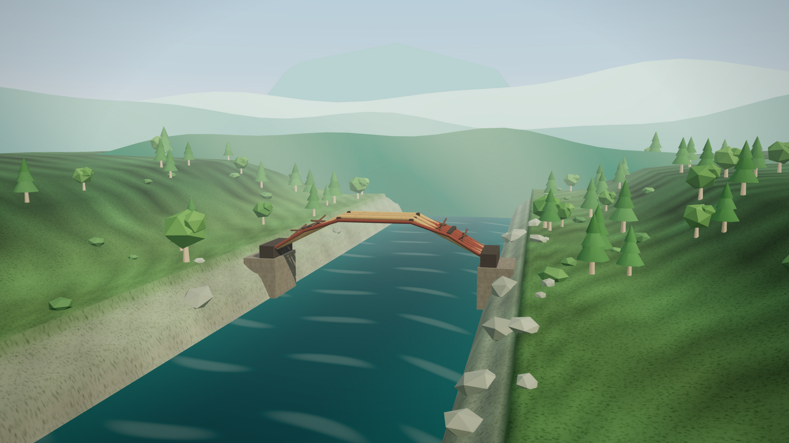
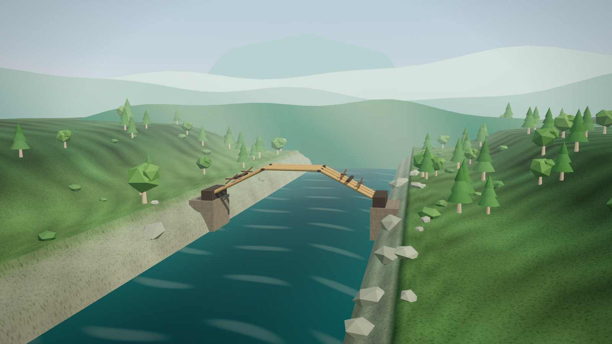
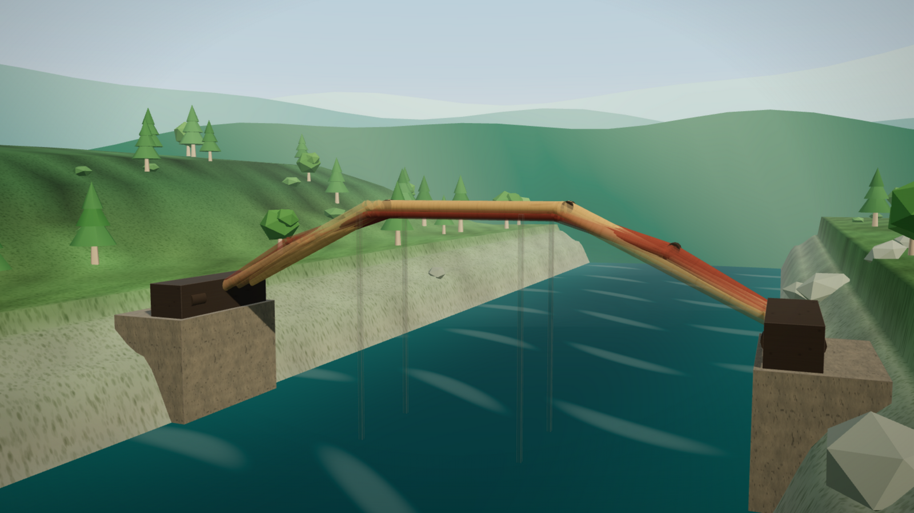

Interactive Case 2026
编梁 北涧桥
把 29 米，折进一堆短木头里。
一座可以亲手编出来的编木拱廊桥。没有钉子，没有桥墩，只有 8 根苗、2 个牛头。两种玩法：速览，或匠作模式——一根一根来，看清每一个榫卯。

开始造桥 ↗01
案例
为什么是北涧桥这不是一座桥的模型，
是一套造桥的顺序。
北涧桥在泰顺泗溪，始建于清康熙十三年，嘉庆八年重建。全长 51.87 米，净跨 29 米，桥屋二十间，中间起重檐楼阁。
它的秘密不是一根更大的木头，而是两套折边拱：三节苗管跨度，五节苗把它别住。短，不是限制，是方法。
51.87m全长
29m净跨
8根苗 / 单排
0颗铁钉
02
结构
两套拱，互相别住
短木头不是缺点。
它是这套结构的起点。
三节苗三根，从两岸顶到拱顶；五节苗五根，从下面穿进去。两套系统在节点上一上一下地错开，牛头横向咬住两端，剪刀苗管前后。桥面压上去，节点只会更紧。
- 三节苗第一系统 · 3 根跨度
- 五节苗第二系统 · 5 根别压
- 牛头横向主梁 · 2 座落岸
- 剪刀苗横向斜撑抗晃

03
做法
十四步，不能跳
- 01
立牛头
两岸的横向主梁先落位。所有苗最后都咬在它身上，桥的推力也在这里落岸。
- 02
编三节苗
三根长料顶出跨度，临时支架撑着。此时它还是个机构，不能自己站住。
- 03
编五节苗
五根短料穿进去。两套系统开始互相别住，机构变成结构。
- 04
锁拱
剪刀苗、横串，把前后和横向锁死。桥要晃，先锁这里。
- 05
拆架
撤掉支撑，桥体微沉，自己站住。这是整个体验的高潮。
- 06
起廊屋
桥面、廊柱、瓦顶压上去。自重让节点更紧，廊桥才成为廊桥。
每一步都要自己拖，放错会弹回；按回车或用「自动入卯」可以放进去。速览 14 步；匠作模式 23 步，会带你走一遍榫卯节点、将军柱和一根一根立起来的廊屋，最后从两岸的石阶走上桥。合龙后可以只看三节苗、只看五节苗，或抽掉一根五节苗看它变成机构；还有小测验，语音和音乐可以一键关。
04
数据
一座桥的尺度51.87m全长
29m净跨
20间廊屋
84根桥柱
0颗铁钉
16/26级东西石阶
数据参考北涧桥公开资料与泰顺县文博馆的讲解。几何、力流与节点均为示意，不是测绘模型，也不作为修缮依据。